Introduction to mixpoissonreg
Alexandre B. Simas
2020-12-31
Source:vignettes/mixpoissonreg.Rmd
mixpoissonreg.RmdWhat is mixpoissonreg for?
The mixpoissonreg package is useful for fitting and analysing regression models with overdispersed count responses. It provides two regression models for overdispersed count data:
Negative-Binomial regression models;
Poisson Inverse Gaussian regression models.
The parameters of the above models may be estimated by the Expectation-Maximization algorithm or by direct maximization of the likelihood function.
There are several functions to aid the user to check the adequacy of the fitted model, perform some inference and study influential observations.
For theoretical details we refer the reader to Barreto-Souza and Simas (2016)
Why use the mixpoissonreg package?
Some reasons are:
glm-like functions to fit and analyze fitted modelsUseful plots for fitted models available using
R’s base graphics orggplot2Estimation of parameters via EM-algorithm
Easy to do inference on fitted models with help of
lmtestpackageRegression structure for the precision parameter
Several global and local influence measures implemented (along with corresponding plots)
Compatibility with the
tidyverse
We will now delve into the reasons above in more detail.
glm-like functions to fit and analyze fitted models
If you know how to fit glm models then you already know how to fit mixpoissonreg models. You use a formula expression for the regression with respect to mean parameter:
library(mixpoissonreg)
fit <- mixpoissonreg(daysabs ~ gender + math + prog, data = Attendance)If you do not provide further arguments, the mixpoissonreg package will fit a Negative-Binomial model with a log link function for the mean estimated via EM-algorithm. Just like you would do with a glm fit, you can just type fit to get a simplified output of the fit, or get a summary, by typing summary(fit):
fit
#>
#> Negative Binomial Regression - Expectation-Maximization Algorithm
#>
#> Call:
#> mixpoissonreg(formula = daysabs ~ gender + math + prog, data = Attendance)
#>
#> Coefficients modeling the mean (with log link):
#> (Intercept) gendermale math progAcademic progVocational
#> 2.707563981 -0.211066195 -0.006235448 -0.424575877 -1.252812675
#> Coefficients modeling the precision (with identity link):
#> (Intercept)
#> 1.047289
summary(fit)
#>
#> Negative Binomial Regression - Expectation-Maximization Algorithm
#>
#> Call:
#> mixpoissonreg(formula = daysabs ~ gender + math + prog, data = Attendance)
#>
#>
#> Pearson residuals:
#> RSS Min 1Q Median 3Q Max
#> 345.7857 -0.9662 -0.7356 -0.3351 0.3132 5.5512
#>
#> Coefficients modeling the mean (with link):
#> Estimate Std.error z-value Pr(>|z|)
#> (Intercept) 2.707564 0.203069 13.333 < 2e-16 ***
#> gendermale -0.211066 0.122373 -1.725 0.0846 .
#> math -0.006235 0.002491 -2.503 0.0123 *
#> progAcademic -0.424576 0.181772 -2.336 0.0195 *
#> progVocational -1.252813 0.201381 -6.221 4.94e-10 ***
#>
#> Coefficients modeling the precision (with link):
#> Estimate Std.error z-value Pr(>|z|)
#> (Intercept) 1.0473 0.1082 9.675 <2e-16 ***
#> ---
#> Signif. codes: 0 '***' 0.001 '**' 0.01 '*' 0.05 '.' 0.1 ' ' 1
#>
#> Efron's pseudo R-squared: 0.1854615
#> Number of iterations of the EM algorithm = 1If you want to fit a Poisson Inverse Gaussian regression model, just set the model argument to PIG:
fit_pig <- mixpoissonreg(daysabs ~ gender + math + prog, model = "PIG", data = Attendance)
summary(fit_pig)
#>
#> Poisson Inverse Gaussian Regression - Expectation-Maximization Algorithm
#>
#> Call:
#> mixpoissonreg(formula = daysabs ~ gender + math + prog, data = Attendance,
#> model = "PIG")
#>
#>
#> Pearson residuals:
#> RSS Min 1Q Median 3Q Max
#> 276.4232 -0.8225 -0.6386 -0.3219 0.3038 5.4969
#>
#> Coefficients modeling the mean (with link):
#> Estimate Std.error z-value Pr(>|z|)
#> (Intercept) 3.060166 0.227621 13.444 < 2e-16 ***
#> gendermale -0.244078 0.129011 -1.892 0.058502 .
#> math -0.007421 0.002641 -2.810 0.004951 **
#> progAcademic -0.719714 0.193040 -3.728 0.000193 ***
#> progVocational -1.591909 0.215375 -7.391 1.45e-13 ***
#>
#> Coefficients modeling the precision (with link):
#> Estimate Std.error z-value Pr(>|z|)
#> (Intercept) 0.7323 0.1121 6.533 6.46e-11 ***
#> ---
#> Signif. codes: 0 '***' 0.001 '**' 0.01 '*' 0.05 '.' 0.1 ' ' 1
#>
#> Efron's pseudo R-squared: 0.1758126
#> Number of iterations of the EM algorithm = 20There are also several standard methods implemented for mixpoissonreg fitted objects: plot, residuals, vcov, influence, cooks.distance, hatvalues, predict, etc.
A fitted mixpoissonreg object is compatible with the lrtest, waldtest, coeftest and coefci methods from the lmtest package, which, for instance, allows one to easily perform ANOVA-like tests for mixpoissonreg models.
We refer the reader to the Analyzing overdispersed count data with the mixpoissonreg package vignette for further details on fitting mixpoissonreg objects.
Useful plots for fitted models available using R’s base graphics or ggplot2
Once you have a fitted mixpoissonreg object, say fit, you can easily produce useful plots by typing plot(fit):
plot(fit)You can also have the ggplot2 version of the above plots by typing autoplot(fit):
autoplot(fit) 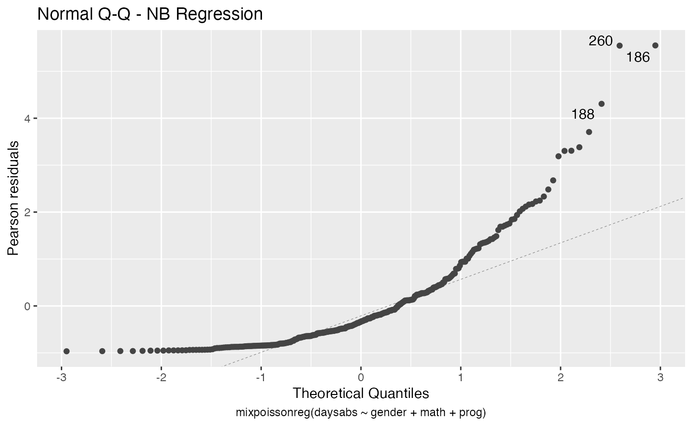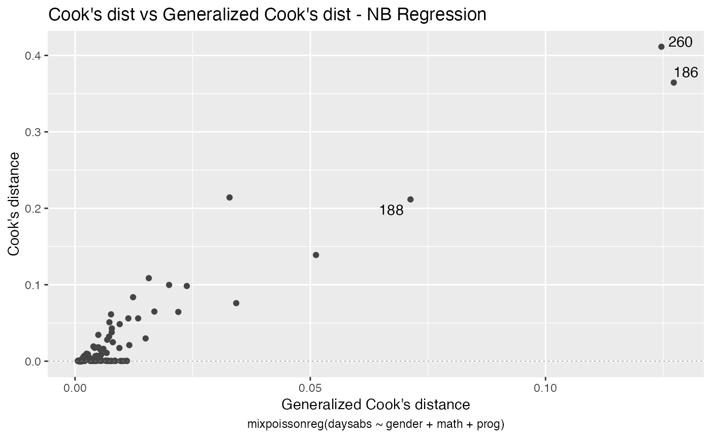
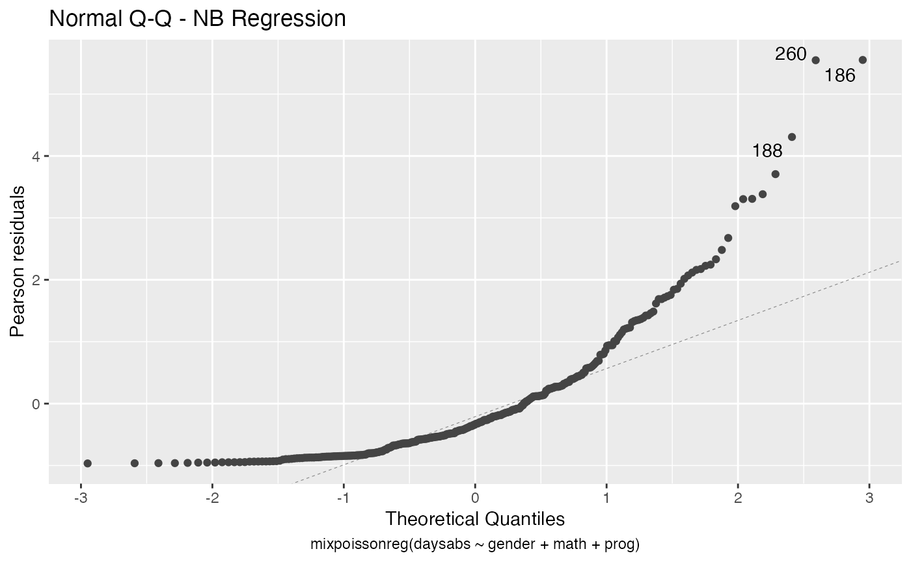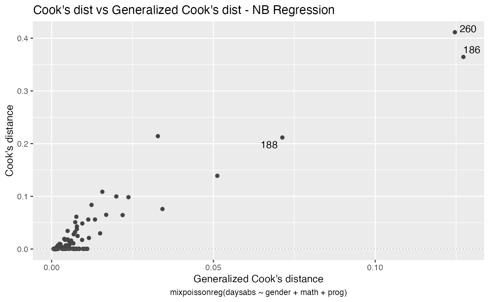
For further details on plots of mixpoissonreg objects, we refer the reader to the Diagnostic plots with the mixpoissonreg package vignette.
Estimation of parameters via EM-algorithm
The EM-algorithm also tries to find the maximum-likelihood estimate of the parameters. So, why is there advantage on using the EM-algorithm? The reason is purely numerical. Sometimes the log-likelihood function has several local maxima or almost flat, which makes the direct maximization of the likelihood function converge (and making it very difficult not to obtain early convergence) before reaching its maximum. In such situations the EM-algorithm may be able to obtain estimates closer to the maximum-likelihood estimate. However, it has a drawback that it may take much longer to converge on such situations.
We refer the reader to the Supplementary Material of Barreto-Souza and Simas (2016) and to Barreto-Souza and Simas (2017) for numerical studies.
Easy to do inference on fitted models with help of lmtest package
We can easily perform ANOVA-like tests using the lmtest package. Let us perform a likelihood-ratio test against the NULL model that only contains the intercept:
lmtest::lrtest(fit)
#> Likelihood ratio test
#>
#> Model 1: daysabs ~ gender + math + prog | 1
#> Model 2: daysabs ~ 1 | 1
#> #Df LogLik Df Chisq Pr(>Chisq)
#> 1 6 -864.15
#> 2 2 -896.47 -4 64.638 3.068e-13 ***
#> ---
#> Signif. codes: 0 '***' 0.001 '**' 0.01 '*' 0.05 '.' 0.1 ' ' 1Now let us perform the Wald test against the NULL model that only contains the intercept:
lmtest::waldtest(fit)
#> Wald test
#>
#> Model 1: daysabs ~ gender + math + prog | 1
#> Model 2: daysabs ~ 1 | 1
#> Res.Df Df Chisq Pr(>Chisq)
#> 1 308
#> 2 312 -4 74.257 2.861e-15 ***
#> ---
#> Signif. codes: 0 '***' 0.001 '**' 0.01 '*' 0.05 '.' 0.1 ' ' 1Let us now consider a reduced model:
fit_red <- mixpoissonreg(daysabs ~ math, data = Attendance)We can perform a likelihood ratio test of full fit model against the NULL of the reduced model as:
lmtest::lrtest(fit, fit_red)
#> Likelihood ratio test
#>
#> Model 1: daysabs ~ gender + math + prog | 1
#> Model 2: daysabs ~ math | 1
#> #Df LogLik Df Chisq Pr(>Chisq)
#> 1 6 -864.15
#> 2 3 -888.15 -3 47.999 2.131e-10 ***
#> ---
#> Signif. codes: 0 '***' 0.001 '**' 0.01 '*' 0.05 '.' 0.1 ' ' 1In the same fashion, we can perform a Wald test of full fit model against the NULL of the reduced model as:
lmtest::waldtest(fit, fit_red)
#> Wald test
#>
#> Model 1: daysabs ~ gender + math + prog | 1
#> Model 2: daysabs ~ math | 1
#> Res.Df Df Chisq Pr(>Chisq)
#> 1 308
#> 2 311 -3 52.537 2.301e-11 ***
#> ---
#> Signif. codes: 0 '***' 0.001 '**' 0.01 '*' 0.05 '.' 0.1 ' ' 1We can obtain confidence intervals for the estimated parameters by using the coefci method:
lmtest::coefci(fit)
#> 2.5 % 97.5 %
#> (Intercept) 2.30955534 3.105572621
#> gendermale -0.45091355 0.028781163
#> math -0.01111851 -0.001352381
#> progAcademic -0.78084150 -0.068310253
#> progVocational -1.64751140 -0.858113947
#> (Intercept).precision 0.83512850 1.259450101Regression structure for the precision parameter
The mixpoissonreg package allows the regression models to also have a regression structure on the precision parameter. It is very simple to fit such models, one simply write the formula as formula_1 | formula_2, where formula_1 corresponds to the regression structure with respect to the mean parameter and contains the response variable and formula_2 corresponds to the regression structure with respect to the precision parameter and does not contain the response variable.
Consider the following example:
fit_prec <- mixpoissonreg(daysabs ~ gender + math + prog | gender + math + prog,
data = Attendance)
summary(fit_prec)
#>
#> Negative Binomial Regression - Expectation-Maximization Algorithm
#>
#> Call:
#> mixpoissonreg(formula = daysabs ~ gender + math + prog | gender +
#> math + prog, data = Attendance)
#>
#>
#> Pearson residuals:
#> RSS Min 1Q Median 3Q Max
#> 322.0142 -1.1751 -0.6992 -0.3600 0.3014 4.7178
#>
#> Coefficients modeling the mean (with link):
#> Estimate Std.error z-value Pr(>|z|)
#> (Intercept) 2.746123 0.147412 18.629 < 2e-16 ***
#> gendermale -0.245113 0.117967 -2.078 0.03773 *
#> math -0.006617 0.002317 -2.856 0.00429 **
#> progAcademic -0.425983 0.132144 -3.224 0.00127 **
#> progVocational -1.269755 0.174444 -7.279 3.37e-13 ***
#>
#> Coefficients modeling the precision (with link):
#> Estimate Std.error z-value Pr(>|z|)
#> (Intercept) 1.414227 0.343243 4.120 3.79e-05 ***
#> gendermale -0.208397 0.203692 -1.023 0.306262
#> math -0.005123 0.004181 -1.225 0.220458
#> progAcademic -1.084418 0.305479 -3.550 0.000385 ***
#> progVocational -1.422051 0.343812 -4.136 3.53e-05 ***
#> ---
#> Signif. codes: 0 '***' 0.001 '**' 0.01 '*' 0.05 '.' 0.1 ' ' 1
#>
#> Efron's pseudo R-squared: 0.1860886
#> Number of iterations of the EM algorithm = 11In the abscence of link.precision argument, a log link will be used as link function for the precision parameter.
Several global and local influence measures implemented (along with corresponding plots)
There are several global influence measures implemented. See influence, hatvalues, cooks.distance and their arguments.
The easiest way to perform global influence analysis on a mixpoissonreg fitted object is to obtain the plots related to global influence:


One can also get the ggplot2 version of the above plots:
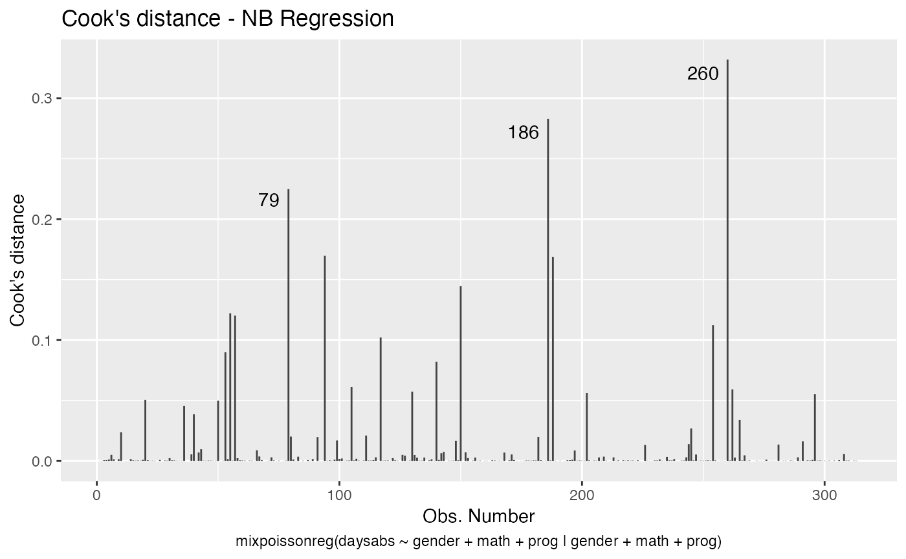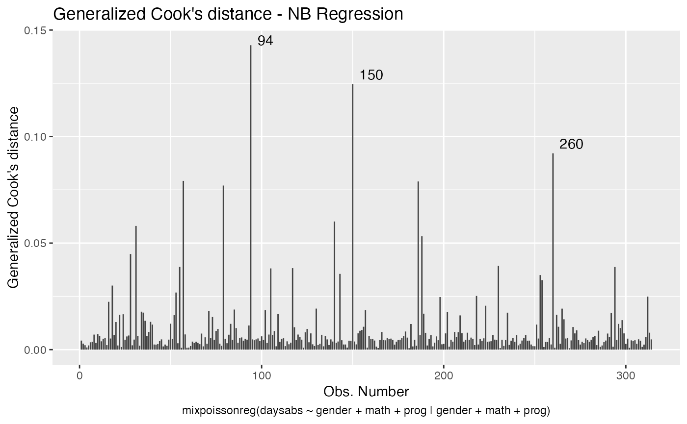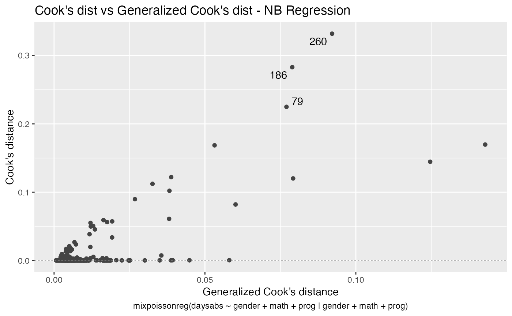
In a similar fashion, there are several local influence measures implemented in the local_influence method. In the same spirit as above, the easiest way to perform local influence analysis on a mixpoissonreg fitted object is to obtain plots by using local_influence_plot method:
local_influence_plot(fit_prec)
One can also obtain ggplot2 versions of the above plots by using the local_influence_autoplot method:
local_influence_autoplot(fit_prec)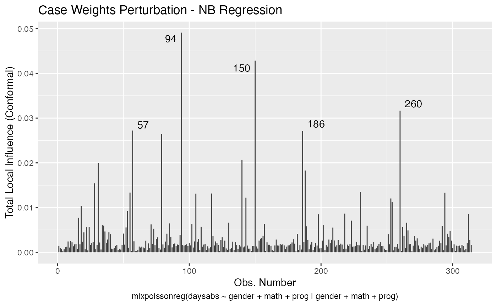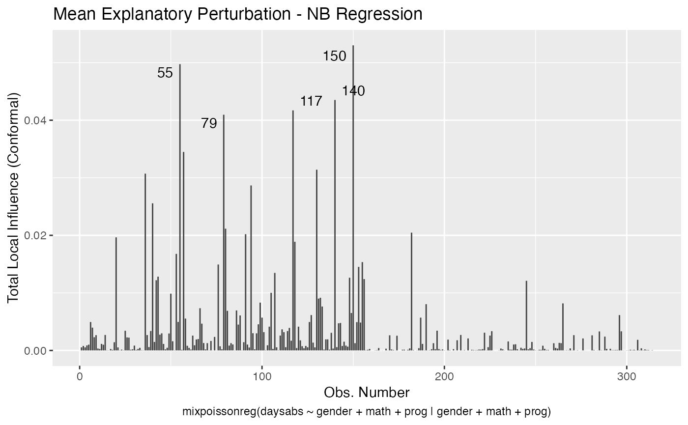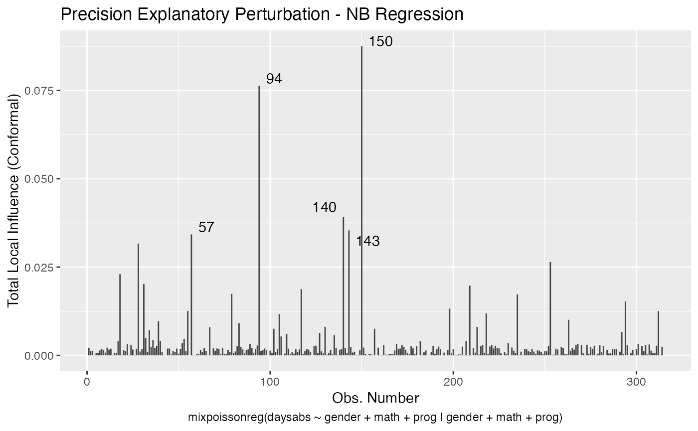
For further details on global and local influence analyses of mixpoissonreg objects, we refer the reader to the Global and local influence analysis with the mixpoissonreg package vignette.
Compatibility with the tidyverse
We provide the standard methods from the broom package, namely augment, glance and tidy, for mixpoissonreg objects:
augment(fit_prec)
#> # A tibble: 314 x 12
#> daysabs gender math prog .fitted .fittedlwrconf .fitteduprconf .resid
#> <dbl> <fct> <dbl> <fct> <dbl> <dbl> <dbl> <dbl>
#> 1 4 male 63 Acad… 5.25 4.14 6.66 -0.200
#> 2 4 male 27 Acad… 6.66 5.40 8.22 -0.370
#> 3 2 female 20 Acad… 8.92 7.21 11.0 -0.814
#> 4 3 female 16 Acad… 9.15 7.34 11.4 -0.713
#> 5 3 female 2 Acad… 10.0 7.76 13.0 -0.772
#> 6 13 female 71 Acad… 6.36 5.02 8.07 0.956
#> 7 11 female 63 Acad… 6.71 5.39 8.34 0.599
#> 8 7 male 3 Acad… 7.81 6.04 10.1 -0.102
#> 9 10 male 51 Acad… 5.68 4.58 7.05 0.660
#> 10 9 male 49 Voca… 2.48 1.86 3.30 1.86
#> # … with 304 more rows, and 4 more variables: .resfit <dbl>, .hat <dbl>,
#> # .cooksd <dbl>, .gencooksd <dbl>
glance(fit_prec)
#> # A tibble: 1 x 9
#> efron.pseudo.r2 df.null logLik AIC BIC df.residual nobs model.type
#> <dbl> <dbl> <dbl> <dbl> <dbl> <int> <int> <chr>
#> 1 0.186 312 -853. 1726. 1764. 304 314 NB
#> # … with 1 more variable: est.method <chr>
tidy(fit_prec)
#> # A tibble: 10 x 6
#> component term estimate std.error statistic p.value
#> <chr> <chr> <dbl> <dbl> <dbl> <dbl>
#> 1 mean (Intercept) 2.75 0.147 18.6 1.87e-77
#> 2 mean gendermale -0.245 0.118 -2.08 3.77e- 2
#> 3 mean math -0.00662 0.00232 -2.86 4.29e- 3
#> 4 mean progAcademic -0.426 0.132 -3.22 1.27e- 3
#> 5 mean progVocational -1.27 0.174 -7.28 3.37e-13
#> 6 precision (Intercept) 1.41 0.343 4.12 3.79e- 5
#> 7 precision gendermale -0.208 0.204 -1.02 3.06e- 1
#> 8 precision math -0.00512 0.00418 -1.23 2.20e- 1
#> 9 precision progAcademic -1.08 0.305 -3.55 3.85e- 4
#> 10 precision progVocational -1.42 0.344 -4.14 3.53e- 5As seen above, the autoplot method from ggplot2 package is also implemented for mixpoissonreg objects.
autoplot(fit_prec)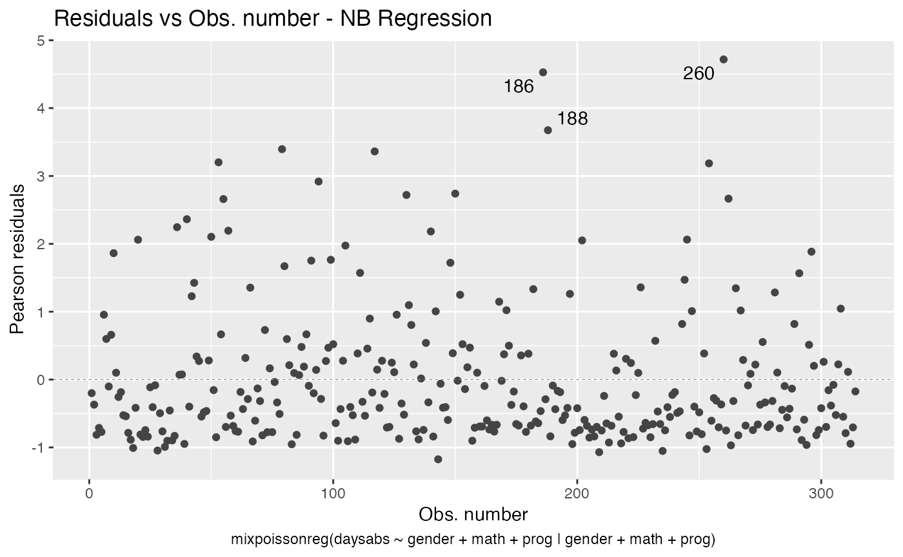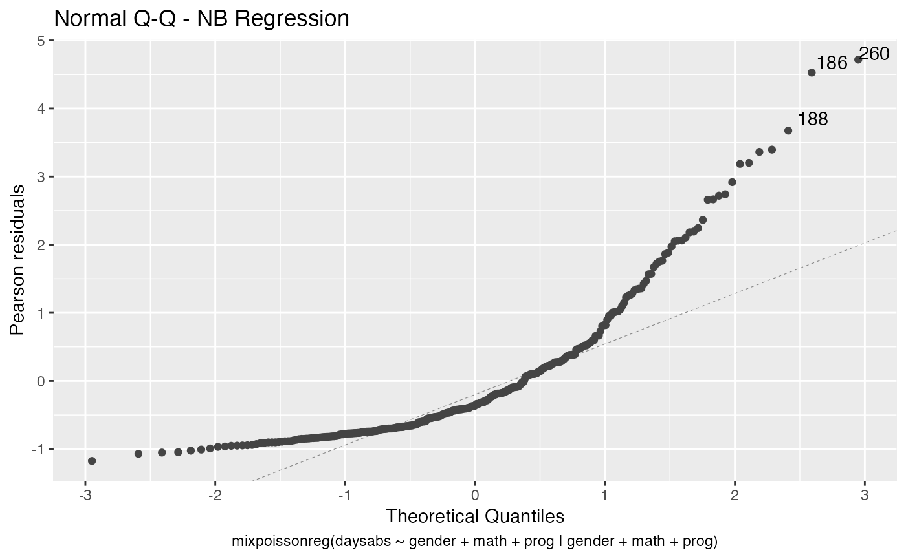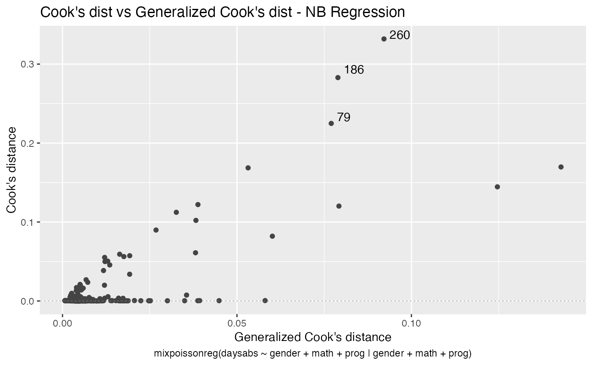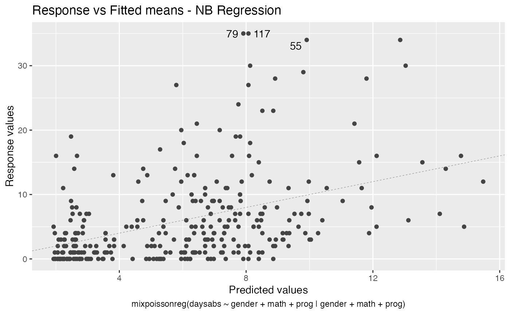
Finally, we provide additional methods related to local influence analysis: tidy_local_influence, local_influence_benchmarks and local_influence_autoplot:
tidy_local_influence(fit_prec)
#> # A tibble: 314 x 5
#> case_weights hidden_variable mean_explanatory precision_expla…
#> <dbl> <dbl> <dbl> <dbl>
#> 1 0.00146 0.000353 0.000533 0.00217
#> 2 0.000970 0.000268 0.000782 0.00129
#> 3 0.000712 0.000369 0.000535 0.00132
#> 4 0.000350 0.000328 0.000875 0.000130
#> 5 0.000680 0.000562 0.00101 0.000701
#> 6 0.00118 0.00387 0.00494 0.000740
#> 7 0.00125 0.00230 0.00396 0.00139
#> 8 0.00243 0.00127 0.00230 0.00185
#> 9 0.00107 0.00180 0.00266 0.00160
#> 10 0.00249 0.00325 0.000340 0.000788
#> # … with 304 more rows, and 1 more variable: simultaneous_explanatory <dbl>
local_influence_benchmarks(fit_prec)
#> # A tibble: 1 x 5
#> case_weights hidden_variable mean_explanatory precision_expla…
#> <dbl> <dbl> <dbl> <dbl>
#> 1 0.0140 0.0206 0.0182 0.0195
#> # … with 1 more variable: simultaneous_explanatory <dbl>
local_influence_autoplot(fit_prec)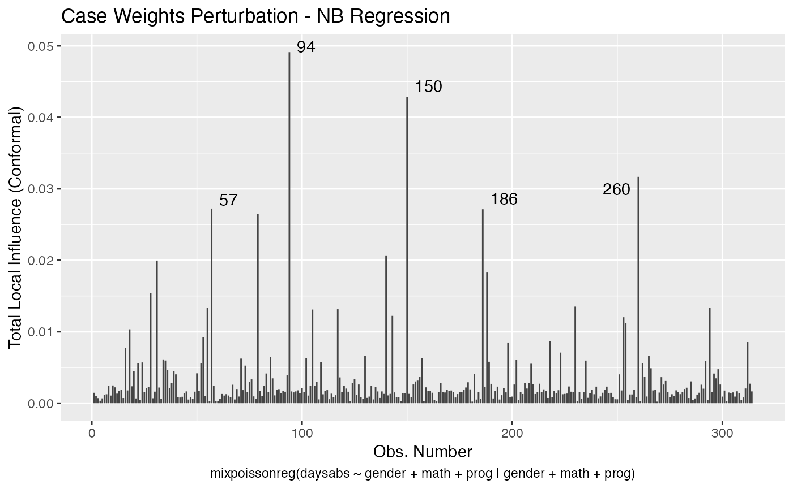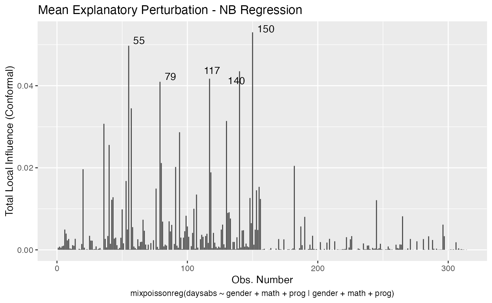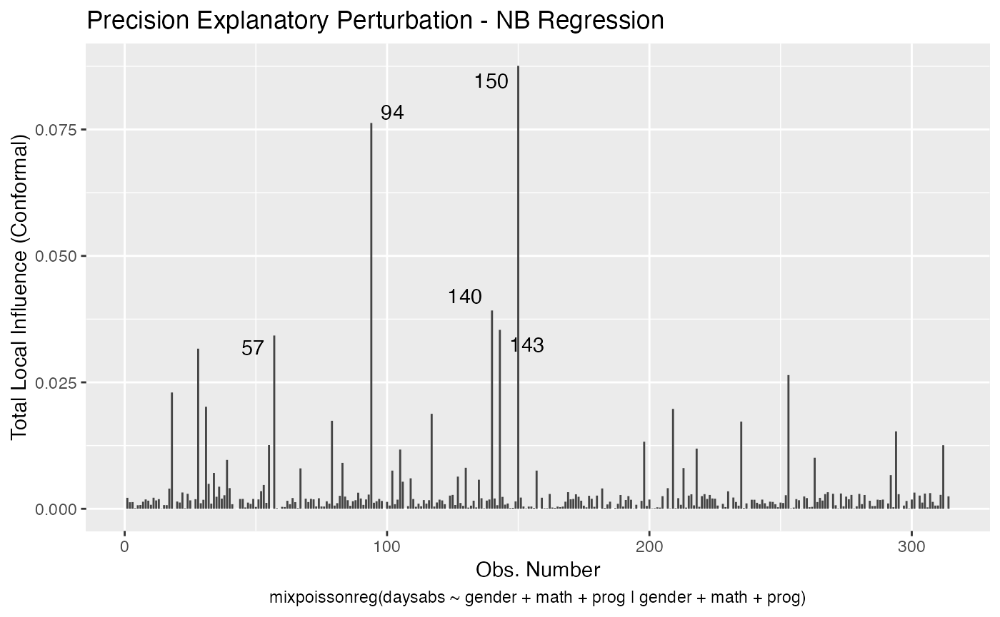
For further details on tidyverse compatibility of mixpoissonreg objects and how to use it to produce nice diagnostics and plots, we refer the reader to the mixpoissonreg in the tidyverse vignette.